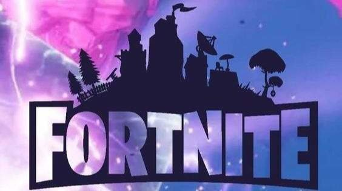

10 Consejos para Mejorar en Fortnite
Descubre cómo convertirte en un maestro de Fortnite con estos consejos expertos.
Leer másBlog JuegosOnline.com
Descubre cómo convertirte en un maestro de Fortnite con estos consejos expertos.
Leer másExplora nuestra selección de los mejores juegos independientes que debes jugar este año.
Leer más